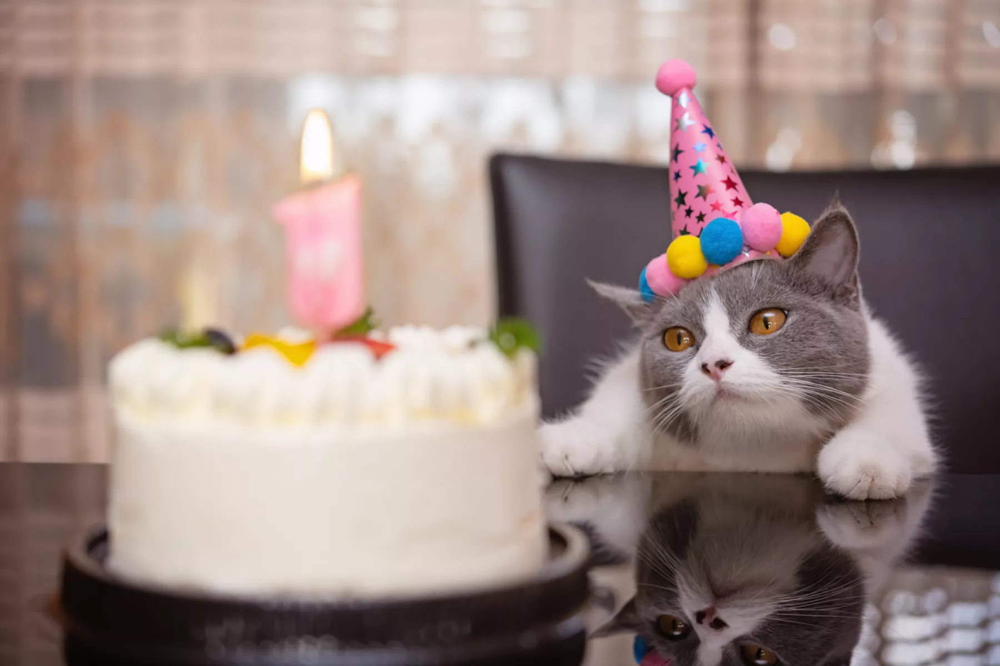
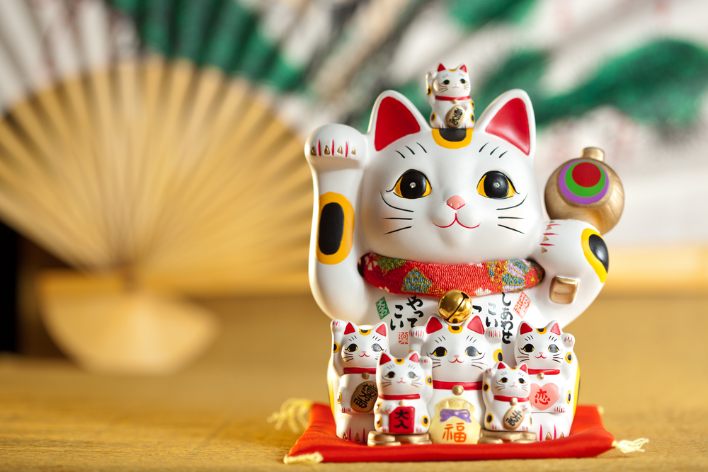
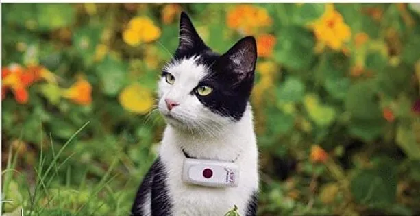
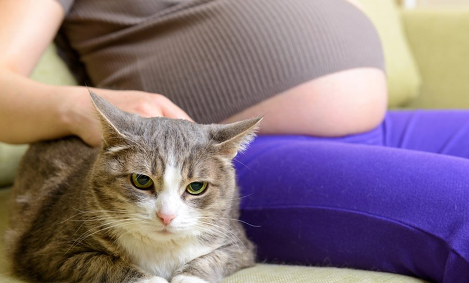

Bienvenido a MichiNoticias :3
¿Por qué el 8 de agosto se celebra el Día Internacional del Gato?
Del mismo modo en que los perros tienen su día especial, los gatos también cuentan con uno propio, aunque en contraste con los caninos, los felinos tienen hasta tres ocasiones para celebrar. La existencia de múltiples fechas destinadas a honrar a estos adorables mininos podría generar desconcierto entre las personas, planteando la interrogante de por qué se asignan tres días distintos para conmemorar a los gatos. Además del Día Internacional del Gato, que se celebra el 8 de agosto, también se festeja el 20 de febrero y el 29 de octubre. Haz click aquí para saber más sobre la razón detrás de la elección de estas fechas.

Las amenazas que dificultan el porvenir del "Gato Andino" se intensifican
La supervivencia del gato andino enfrenta desafíos significativos debido a la minería y a la presencia de perros pastores. Esta especie, que se encuentra en una situación de alto riesgo y cuenta con escasas políticas de conservación en los países donde reside (Perú, Bolivia, Chile y Argentina), es amenazada principalmente por estas dos actividades. Aunque la caza de este felino para propósitos rituales ha disminuido, persisten las matanzas basadas en supersticiones. Además, se está observando un aumento en los casos de atropellos que afectan a esta especie. Para saber más de estas causas da click aquí.

¿Cuál es la razón detrás de la naturaleza mítica de los gatos en la cultura japonesa?
¿Te has percatado alguna vez de los adornos de gatos con una pata levantada en gesto de bienvenida? Estos son conocidos como Maneki-Neko, que se traduce como "gato que invita a entrar". Son colocados en la entrada de casas o tiendas para atraer el éxito y la prosperidad. No solo son considerados gatos de la suerte, sino que en Japón llevan consigo un significado de gran importancia tanto en su cultura como en su historia. Si deseas conocer más acerca de las razones detrás de esto, puedes acceder al siguiente enlace.

Parque Kennedy: ¿Cuáles son las medidas necesarias para abordar la presencia de colonias de gatos callejeros?
En áreas como el parque Kennedy, Campo de Marte, la Residencial San Felipe y diversas localidades de Lima, se encuentran varias comunidades de gatos callejeros, incluyendo gatos ferales que evitan el contacto humano. Expertas en el tema subrayan la relevancia de las campañas basadas en el método "Captura, Esteriliza, Retorna", así como las enfermedades comunes que enfrentan estos felinos. Si deseas obtener más información, te invito a hacer clic en este enlace.

El dispositivo colgante que facilita el seguimiento de tus gatos a través de tecnología Bluetooth.
La empresa estadounidense Tile ha presentado Tile For Cats, un conjunto de accesorios diseñados para gatos que comprende un collar de silicona y un rastreador Bluetooth que posibilita el seguimiento de su ubicación. Si deseas obtener más información sobre este dispositivo, puedes hacer clic aquí.

¿Representa un riesgo para una mujer embarazada convivir con gatos?
Vivir el embarazo y la etapa de ser madre junto a un gatito en el hogar puede resultar una experiencia encantadora, pero también conlleva ciertos peligros que es importante considerar. Descubre estos riesgos aquí y aprende cómo evitarlos.
